Certificates
Certificates I have earned in 2026. Click any certificate to see it full size.
Cybersecurity
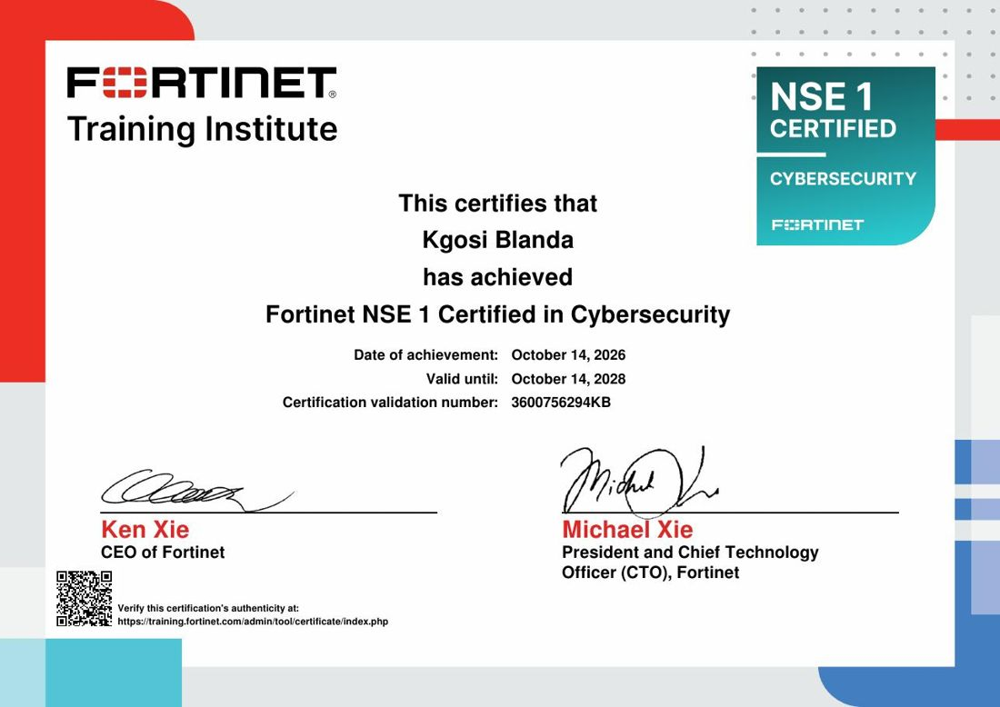
Fortinet NSE 1 Certified in Cybersecurity (Oct 2026)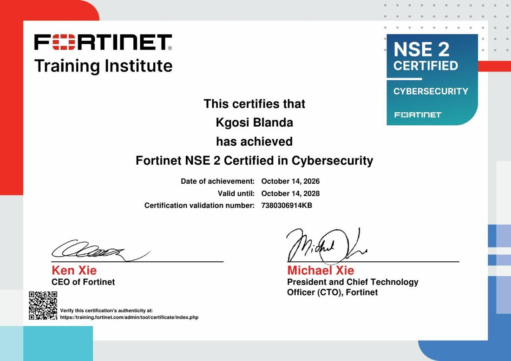
Fortinet NSE 2 Certified in Cybersecurity (Oct 2026) Fortinet NSE 3 Certified in Cybersecurity (Oct 2026)
Fortinet NSE 3 Certified in Cybersecurity (Oct 2026)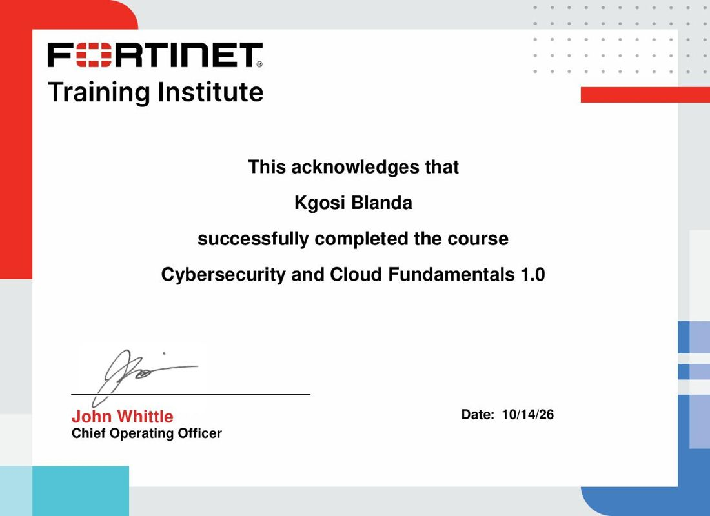
Fortinet: Cybersecurity and Cloud Fundamentals Cisco NetAcad: Introduction to Cybersecurity (Jan 2026)
Cisco NetAcad: Introduction to Cybersecurity (Jan 2026) Cyberlympics Botswana 2026: participation
Cyberlympics Botswana 2026: participationNetworking
 Cisco NetAcad: Networking Basics (Apr 2026)
Cisco NetAcad: Networking Basics (Apr 2026) Cisco NetAcad: Getting Started with Packet Tracer (Jan 2026)
Cisco NetAcad: Getting Started with Packet Tracer (Jan 2026)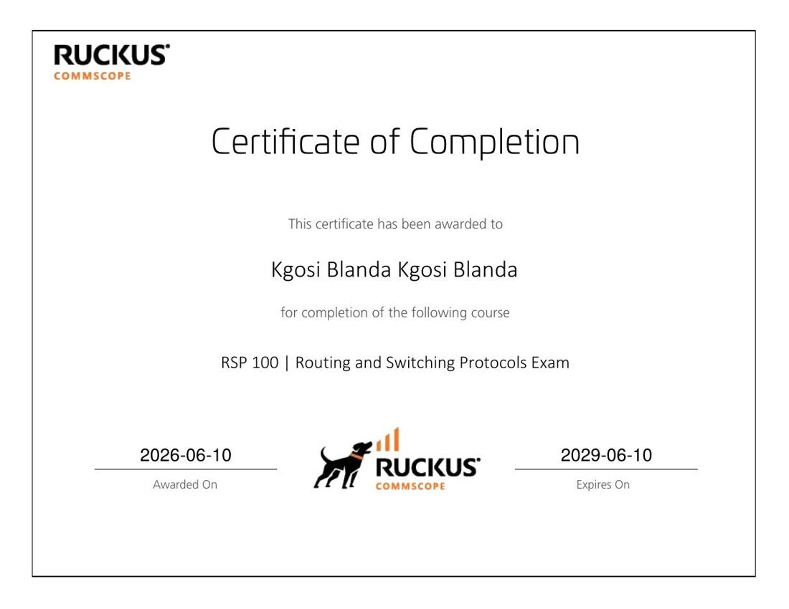
RUCKUS RSP 100: Routing and Switching Protocols (Jun 2026)Cisco Black Belt Academy (partner training)
19 certificates across Cisco devices, Webex collaboration, workplace, data centre and switching tracks (March to June 2026).
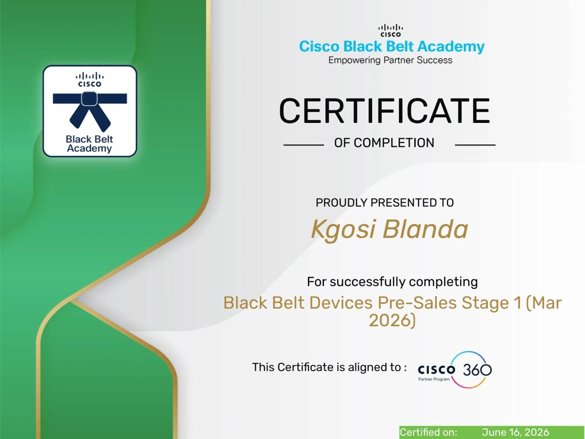
Devices Pre-Sales Stage 1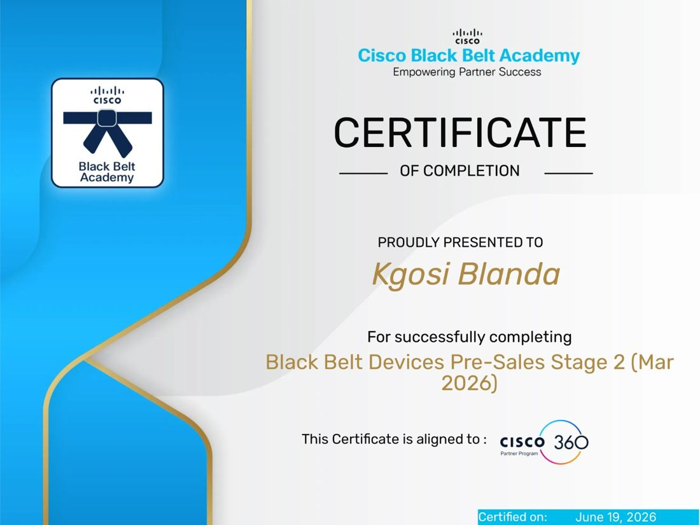
Devices Pre-Sales Stage 2Devices Pre-Sales Stage 3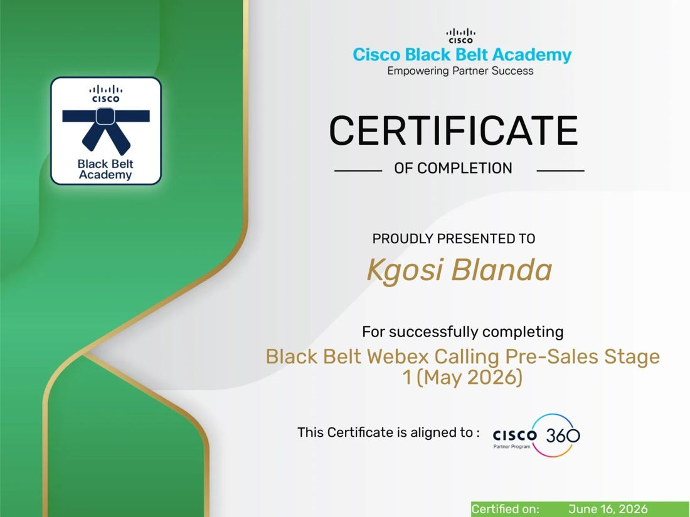
Webex Calling Pre-Sales Stage 1Webex Calling Pre-Sales Stage 2Webex Calling Pre-Sales Stage 3Webex Contact Center Pre-Sales Stage 1Webex Contact Center Pre-Sales Stage 2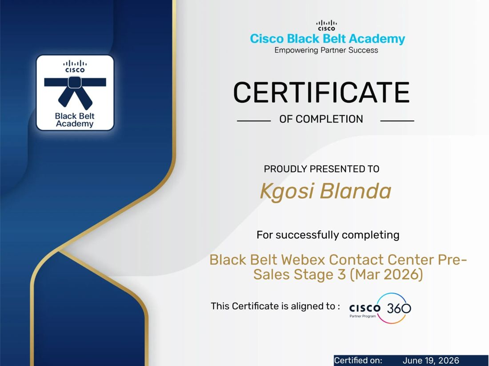
Webex Contact Center Pre-Sales Stage 3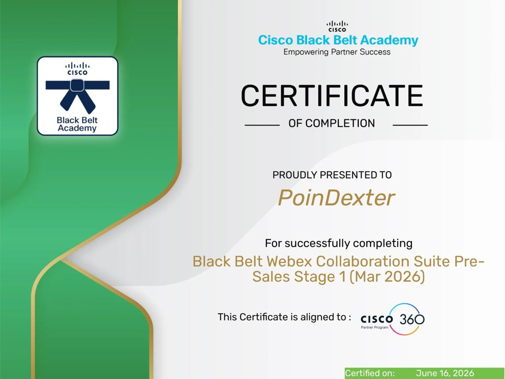
Webex Collaboration Suite Pre-Sales Stage 1 (issued under my old account name)Webex Collaboration Suite Pre-Sales Stage 2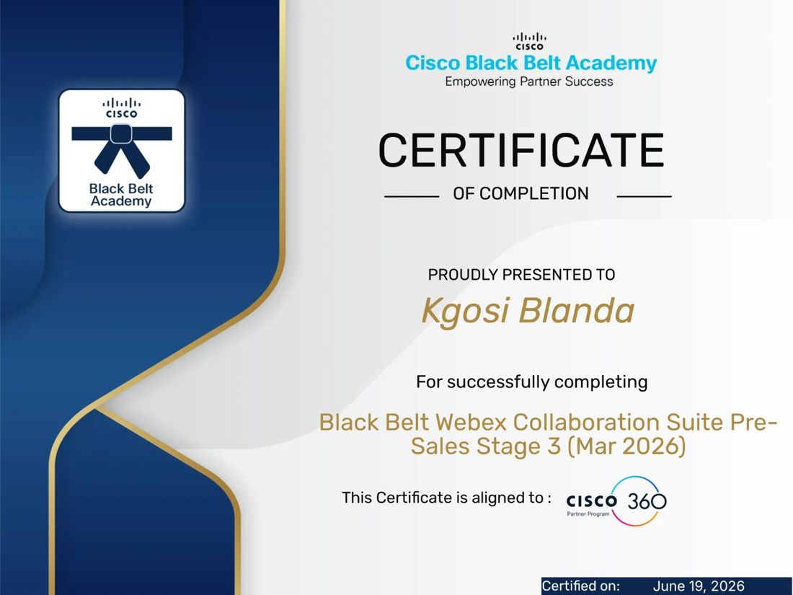
Webex Collaboration Suite Pre-Sales Stage 3Future-Proofed Workplaces Pre-Sales Stage 1Future-Proofed Workplaces Pre-Sales Stage 2Future-Proofed Workplaces Sales Stage 2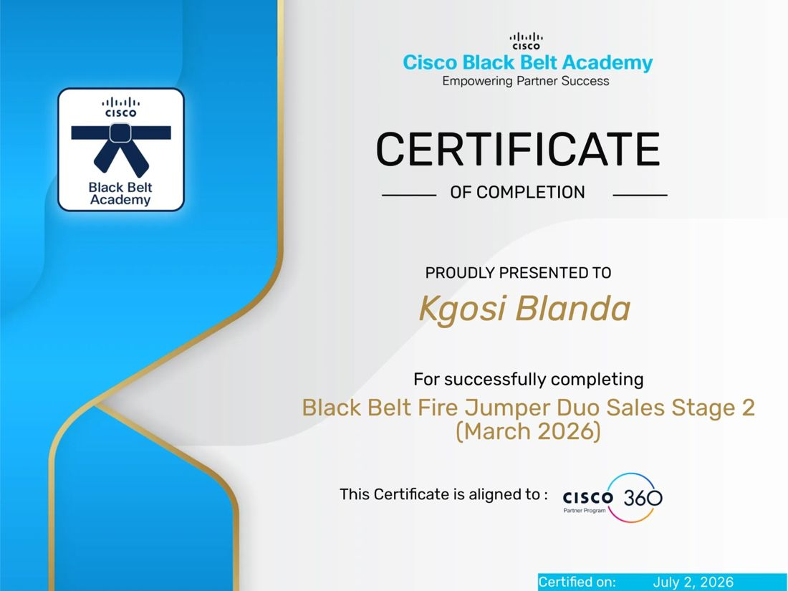
Fire Jumper Duo Sales Stage 2UCS Pre-Sales Stage 1Intersight Pre-Sales Stage 1Switching Support Stage 2Data protection, AI and project management